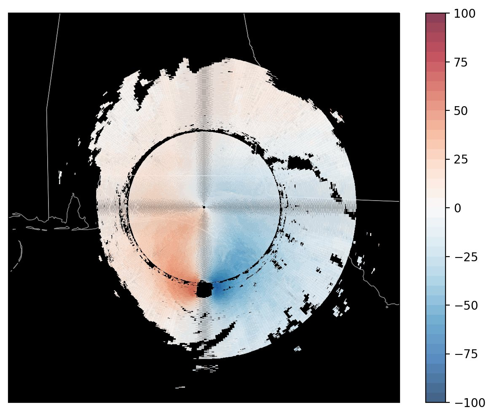

Posts tagged NEXRAD
Fixing Weird Patterns When Plotting NEXRAD Level 3 Data
- 12 April 2022
The motivation here comes from a thread on Twitter, indicating an issue when plotting NEXRAD Level 3 radial velocity (NOU).
Here is the radar image, plotted by David (@dryglick):
